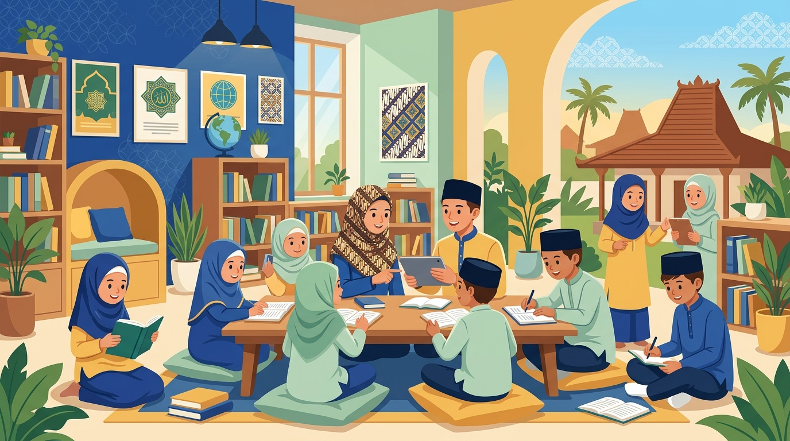

Mewujudkan Generasi Penerus yang Faham Agama & 29 Karakter Luhur
Pusat data dan koordinasi pembinaan generasi penerus terpadu di 5 Desa dan 27 Kelompok wilayah Solo Selatan.

Dari usia dini hingga pra-nikah — klik label jenjang di bawah untuk melihat rincian sebaran generus per desa
Pembentukan karakter dasar melalui pembiasaan ibadah dan akhlak sejak usia dini.
Penguatan aqidah, ibadah, dan kepemimpinan untuk generasi usia SMP dan SMA.
Persiapan kemandirian dan kehidupan berkeluarga dengan pembekalan nilai-nilai Islam.
Daftar agenda event dan kegiatan rutin bulanan PPG Solo Selatan
Ekosistem terintegrasi untuk pendataan, pemantauan agenda, dan pelaporan pembinaan generus
Pencatatan data profil lengkap: jenjang usia, kelompok binaan, dan riwayat perkembangan santri.
Transparansi agenda pembinaan sepanjang tahun dengan pemantauan status kegiatan bulanan yang teratur.
Monitoring ibadah harian & 29 Karakter Luhur generus usia dini: sholat 5 waktu, mengaji, dan adab akhlak.
Rekapitulasi kehadiran KBM dan konversi data ke format lembar presensi resmi A4 yang siap cetak.
Berdiri sejak 2010 di Surakarta, Jawa Tengah, kami berkomitmen membina generasi muda dengan nilai-nilai Islam yang kuat dan karakter mulia — dari usia PAUD hingga remaja pra-nikah.